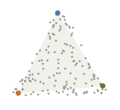
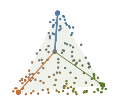
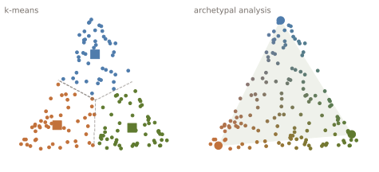
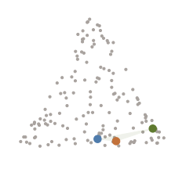

Archetypal analysis, visually
Archetypal analysis (AA) describes a dataset through a handful of extreme cases, the archetypes, and explains every observation as a mixture of them. Instead of asking “which group does this point belong to?”, it asks “how much of each extreme does this point have?”
Every point is a mixture
Take any point of the cloud. It can be written as a weighted average of the archetypes: the weights are never negative and add up to one, so they say how much of each archetype the point contains. Below, each point is coloured by blending the colours of the archetypes with its weights, and one point is highlighted with a line to each archetype, as thick as its weight. Points near a corner are almost pure; points in the middle mix all three.

In matrix form, with the data X \in \mathbb{R}^{n \times p} and k archetypes stored as the rows of Z \in \mathbb{R}^{k \times p}, the weights of the n observations form a matrix A \in \mathbb{R}^{n \times k} and the data are approximated by X \approx A Z. The second ingredient is what makes AA special: the archetypes are themselves mixtures of observations, Z = B X. Fitting the model means solving
\min_{A,\,B}\ \lVert X - A B X \rVert_F^2 \quad\text{s.t.}\quad A\mathbf{1} = \mathbf{1},\ B\mathbf{1} = \mathbf{1},\ A, B \ge 0 .
A says how much of each archetype every observation has; B says which observations each archetype is made of. Because B is also a mixture, the archetypes never leave the data: they are extreme, but they look like real observations, so you can inspect them as such.
Archetypes are not centroids
A centroid, as in k-means, is the average of a group: it describes a typical case, and it lies inside the cloud. An archetype is the opposite: it describes an extreme case, and it lies on the boundary. Same data, same number of groups, very different summaries.

Compared with methods like PCA, which can produce components with negative loadings that look like no real observation, archetypes are always non-negative mixtures of the data itself, so they stay within its range and are easy to interpret.
How the archetypes move
Fitting starts from random archetypes. Each iteration moves them towards the extremes while the reconstruction error \lVert X - ABX\rVert_F^2 drops.

Going further
AA is most useful when the extremes tell you more than the averages do. It has been used, for example, to classify 3D foot shapes from landmarks, describing each foot as a mixture of a few archetypal shapes.
The idea also goes beyond a single data matrix. Biarchetype analysis finds archetypes of the observations and of the features at the same time, and A Survey on Archetypal Analysis reviews the method, its variants and its applications.
The code behind the figures here is a short from-scratch implementation, written only to illustrate the idea. For real analyses use archetypes, a Python library for archetypal analysis that is compatible with scikit-learn.